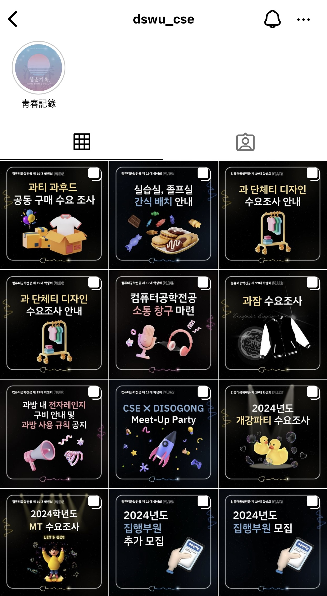
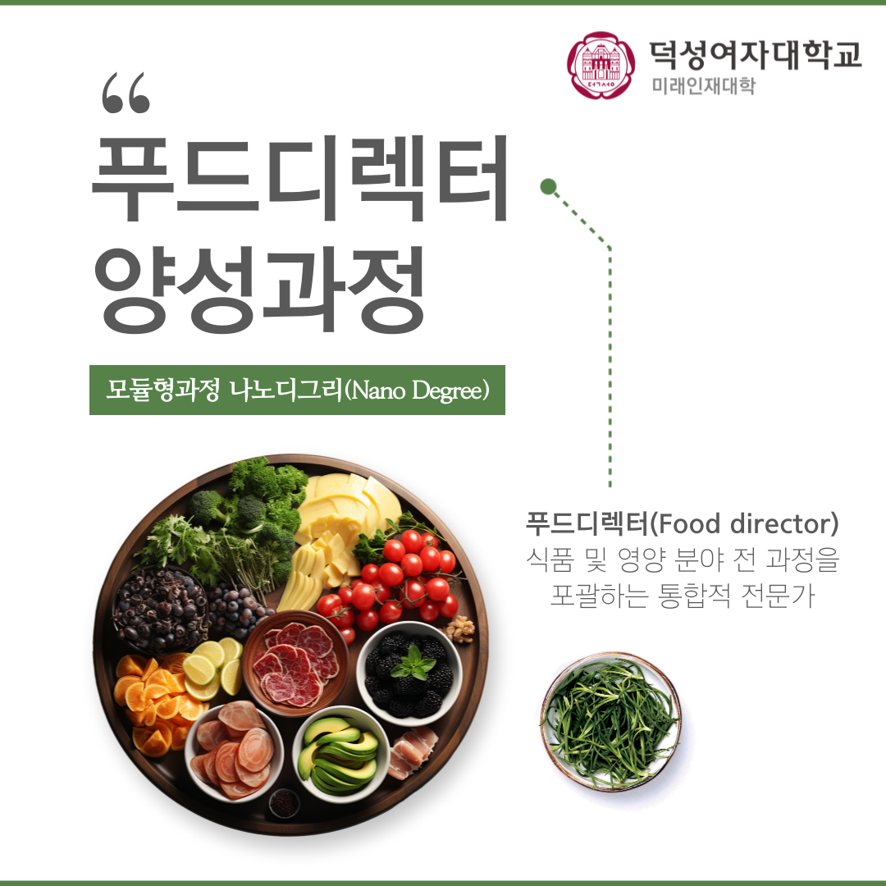
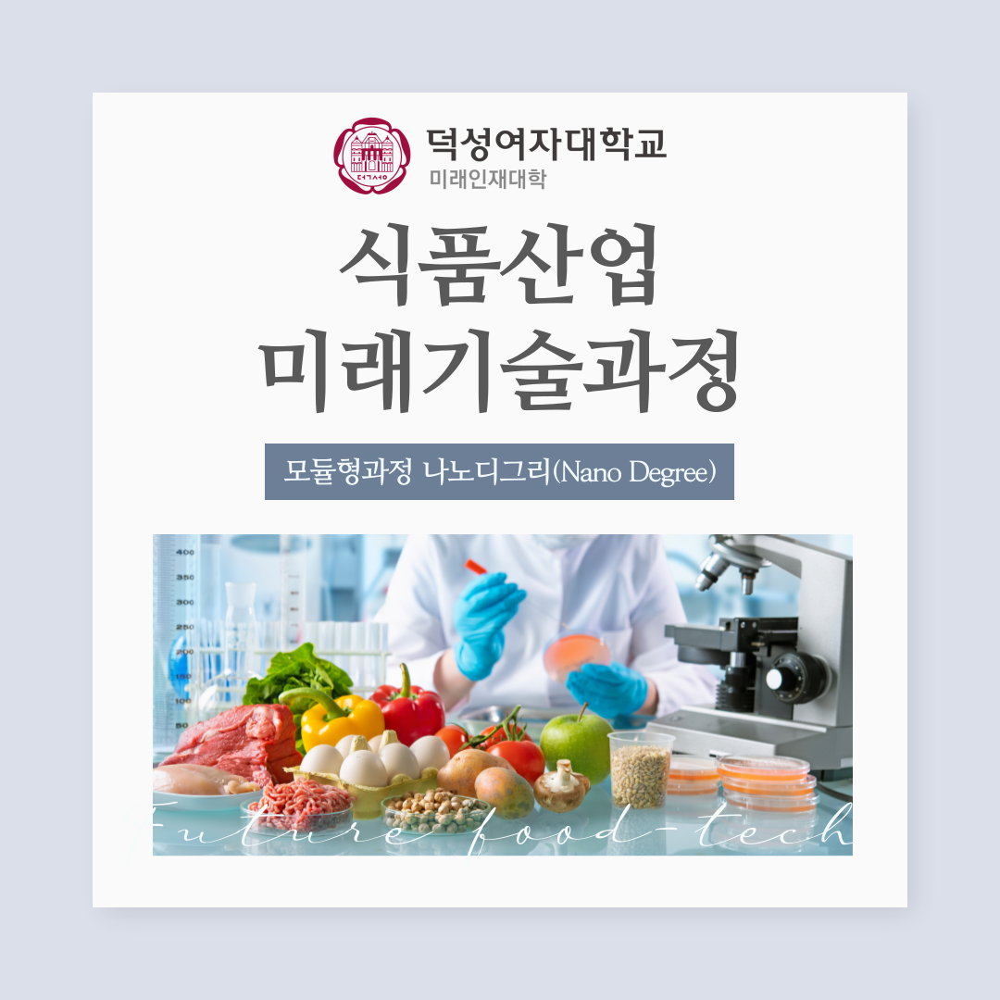

Designer is in here!


특정 주제에 맞는 컨셉을 기획하고 그에 맞는 이미지나 색 조합을 탐색하는 시각화 작업에 관심이 많습니다.
현재는 관심분야를 살려 컴퓨터공학전공 및 미래인재대학 소속으로 홍보용 카드뉴스 제작을 담당하고 있습니다.
| 연번 | 날짜 | 구분 | 제목 | 작업자 |
|---|---|---|---|---|
| 1 | 02/23 | 컴퓨터공학전공 | 2024학년도 MT 수요조사 | 공동 |
| 2 | 03/01 | 컴퓨터공학전공 | 2024년도 개강파티 수요조사 | 공동 |
| 3 | 03/08 | 미래인재대학 | 한국어교육전공 전공 설명회 개최 안내 | 단독 |
| 4 | 03/10 | 컴퓨터공학전공 | CSE ✖ DISOGONG Meet-Up Party | 단독 |
| 5 | 03/13 | 컴퓨터공학전공 | 과방 내 전자레인지 비치 안내 및 과방 사용 규칙 공지 | 단독 |
| 6 | 03/15 | 컴퓨터공학전공 | CSE ✖ DISOGONG Meet-Up Party 빙고판 | 공동 |
| 7 | 04/01 | 컴퓨터공학전공 | 실습실, 졸프실 간식 배치 안내 | 단독 |
| 8 | 04/03 | 컴퓨터공학전공 | 과 단체티 디자인 수요조사 안내 | 단독 |
| 9 | 04/05 | 미래인재대학 | 푸드디렉터양성과정 소개 | 단독 |
| 10 | 04/12 | 미래인재대학 | 식품산업미래기술과정 소개 | 단독 |